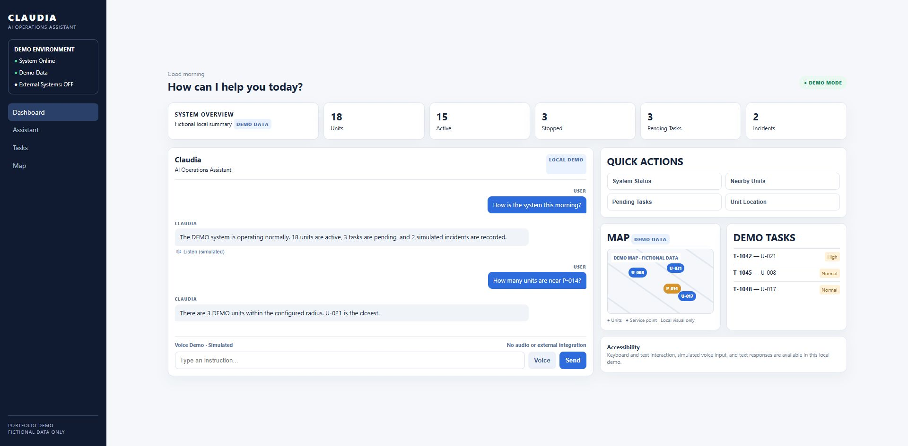
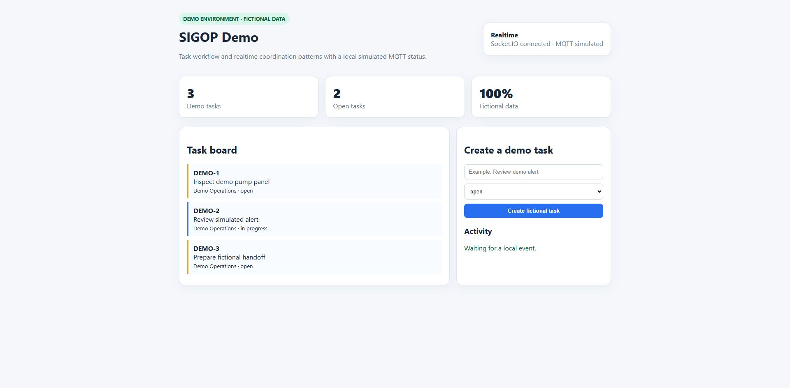

IoT & Monitoring
Connecting heterogeneous monitoring sources into clear, operational interfaces.
OPEN TO REMOTE OPPORTUNITIES
I build practical software prototypes for IoT, monitoring, automation, data processing, and real-time operational workflows.
01 / ABOUT
I develop and support software prototypes for telemetry, monitoring, automation, data processing, and operational workflows. My practical focus includes Python and Node.js services, REST APIs, dashboards, automated testing, technical analysis, and real-time communication patterns.
I am interested in remote opportunities in Python development, backend development, AI evaluation, software QA and testing, data operations, automation, and technical support.
B.S. in Telematics Engineering · Universidad Abierta y a Distancia de México (UnADM) · In progress
Spanish: Native · English: Basic
02 / WHAT I BUILD
Connecting heterogeneous monitoring sources into clear, operational interfaces.
Processing and connecting structured data from different systems, formats, and sources.
Event-driven workflows, live status updates, Socket.IO, MQTT concepts, and WebSocket-oriented communication patterns.
Repeatable workflows for extraction, processing, transformation, and operational tasks.
Interfaces that turn technical data into clear operational information.
Python and Node.js services, REST APIs, automated testing, troubleshooting, and software quality practices.
03 / PLATFORMS & SYSTEMS

A modular operational assistant in development, designed around natural-language commands, conversational context, monitoring-system queries, and confirmation flows. Its public repository is a safe, simplified demo with /health, /chat, and /voice endpoints, simulated responses, and automated tests.

Functional prototype for operational management and real-time coordination workflows. The public demo demonstrates Node.js and Express services, APIs, real-time communication, and a simulated MQTT workflow.
View on GitHub ↗Prototype exploration of GPS tracking components, data processing, real-time events, status transitions, and monitoring interfaces.
GPS concepts · Data processing · Real-time events · MonitoringTechnical work focused on integrating heterogeneous telemetry and monitoring sources into unified visualization environments.
Multi-source integration · Data processing · Visualization · AlertsExperimental prototype around network monitoring, device availability, SNMP-oriented diagnostics, status visualization, and monitoring workflows.
Network monitoring · Availability checks · SNMP-oriented workflowsPrototype in development exploring reports, work orders, coordination workflows, APIs, and real-time application behavior.
Operational workflow · APIs · Real-time patternsPrototype work involving structured data extraction, transformation, processing, and visualization workflows.
Extraction · Transformation · Processing · Visualization04 / SYSTEM INTEGRATION
A recurring technical focus is bringing information from devices, systems, and data sources into unified monitoring interfaces.
05 / TECHNICAL FOCUS
Python · Node.js · Express · REST APIs · Socket.IO
SQL · MySQL · CSV · JSON · XLSX · Data Processing
Telemetry concepts · Dashboards · Status visualization · Alerts · SCADA concepts
Event-driven workflows · Socket.IO · MQTT concepts · WebSocket patterns
Automated testing · Software QA · Data workflows · Technical analysis
Git · GitHub · VS Code
06 / OPEN TO REMOTE OPPORTUNITIES
Python development · backend development · AI evaluation · software QA and testing · data operations · automation · technical support · IoT and monitoring systems
manuel.alfredo.dev@gmail.com github.com/ManuelAlfredoDev ↗